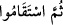

Enes b. Malik (r.a.) şöyle der: Bu âyet indiği gün Allah Rasûlü çok mutlu oldu ve
sevinçten “ümmetim ve Kâbe’nin Rabbi” dedi.” Allah Teâlâ kullarından îmanda
istikamet ve sebat istemektedir. Zîrâ Yahudi ve Hristiyanlar memur oldukları tevhid dîni
üzere istikamet göstermemişler, Yahudiler ‘Üzeyir Allah’ın oğludur’; Hristiyanlar ‘Îsâ
Mesih Allah’ın oğludur’ demişler ve benzer nice hezeyanlarda bulunmuşlardır. Hatta
Hz. Muhammed (s.a.)’in peygamberliğini inkâr etmişlerdir. İstikamet, kişinin fayda ve
zararı yalnız Allah’tan bilmesi; yalnız Allah’tan ümidvar olması ve yine yalnız Allah’a
karşı haşyet ve saygı duymasıdır.
Süfyan b. Abdullah es-Sakafî şöyle der: “Ben ‘Yâ Rasûlallah, bana sımsıkı
sarılacağım, bir emir ve tavsiyede bulunun’ dedim. Rasûlullah (s.a.) “Rabbim Allah’tır
de, sonra dosdoğru ol” buyurdular. Ben, “benim için en çok endişe edilecek ve dikkat
edilecek olan şey nedir?” dedim. Peygamber (s.a.) eliyle kendi dilini tutarak gösterip
“işte budur” buyurdular.
Hasan Basrî bu âyet-i kerimeyi okuduğu zaman “Allah’ım sen bizim rabbimizsin;
bizleri istikamet ve doğrulukla rızıklandır” diye duâ ederdi.
Keşfü’l-esrâr sahibi der ki,
/Rabbunallah tevhîd-i ikrârdır ki mü’minlere âiddir.
(__WORD__) ifâdesi tevhîd-i mârifete işâret etmektedir ki sıddıklar ve âriflerin tevhîdi
böyledir.
Tevhîd-i ikrâr; Allah’ın bir olduğunu söylemen, tevhîd-i mârifet ise onun bir olduğunu
bilmen, yani her cihetten onun vahdetini görmendir. Fakat vahdet âleminde yön ve taraf
yoktur. Burada ne cihetten, ne sıfattan, ne tefekkür ve ifâdeden, ne de mârifetten söz
edilir. Vahdet sırrından bir ateş “birden başka” her şeyi yok eder, önüne çıkan her şeyi
yakar.
Bir vakit Bâyezîd Bistâmî (k.s.) ilim makamında bulunmaktaydı. Tevhîd-i ikrârı
açıklıyordu, müridlerinden birisi; “ey şeyh Allah’ı tanıyor musun?” dedi. “Bu toprak
âleminde Allah’ı bilen veya tanıyan hiç kimse yoktur” diye cevap verdi. Başka bir vakit
mârifet tevhîdinin okyanusuna dalmış, muhabbet âteşiyle yanmış bir haldeyken ona;
“Allah’ı biliyor musun?” dediklerinde şöyle cevap verdi: “Ben kimim ki onu tanıyıp
bileyim, bu toprak âleminde onu kim tanıyıp bilebilir?”
Senin aşkında ben kimim ki menzilimde,
Senin vuslat yanağının gülünden toprağıma bir koku gelsin.
Tarîkat pirlerinden birisi Hak ile sohbetin iki kelime ile olduğunu söyledi: İcâbet ve
istikâmet. İcâbet; söz vermek ahd, istikâmet vefâdır. İcâbet şerîat, istikâmet hakîkattir.
Bin yıllık şerîatı bir saatte idrâk etmek mümkündür, fakat bir saatlik hakîkati bin yılda
idrâk etmek mümkün değildir.”
et-Te’vîlâtü’n-Necmiyye’de bu âyetin işârî bir yorumu şu şekildedir: Allah Teâlâ
ruhları yaratıp onlara ‘ben sizin Rabbiniz değil miyim?’ diye hitab edince, ruhlar